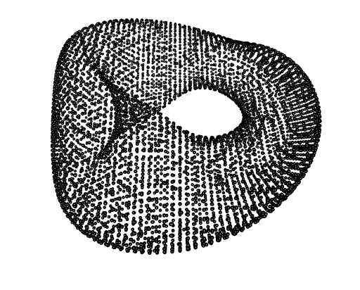
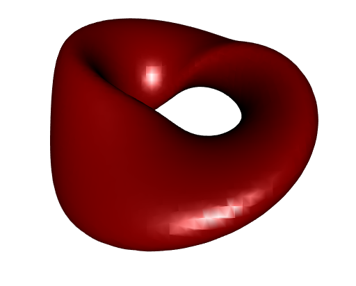
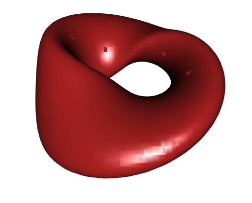
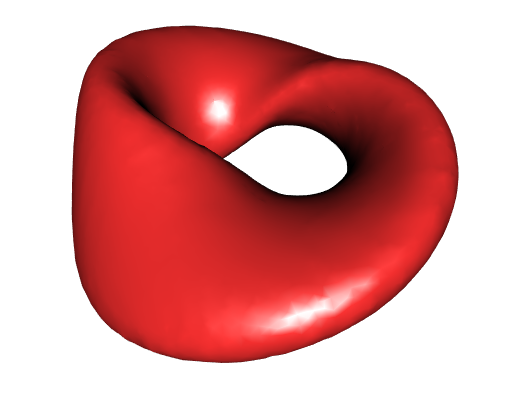
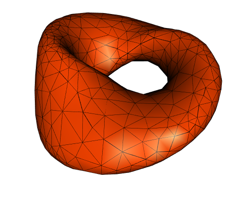
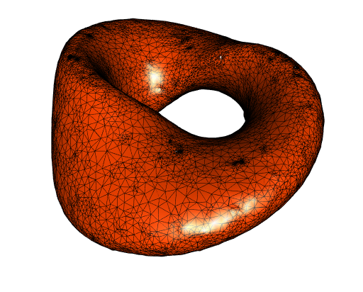
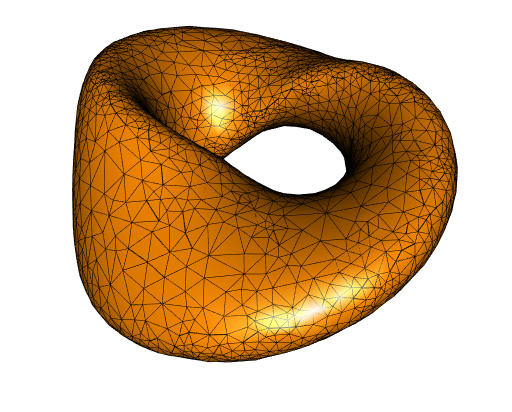
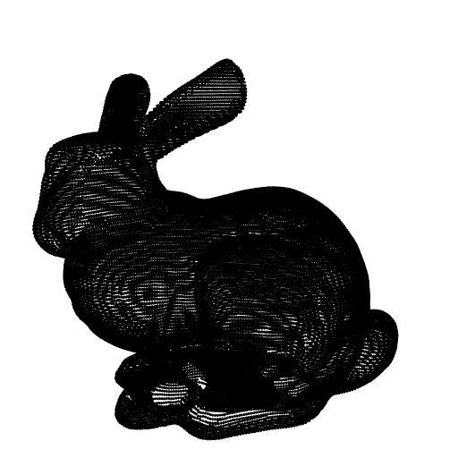
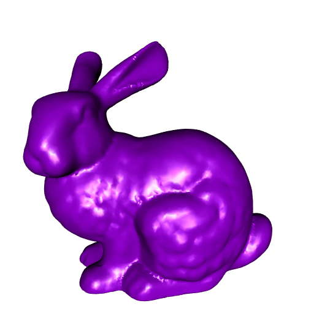
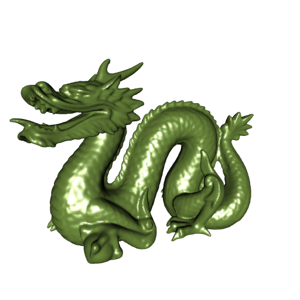

Surface reconstruction with R(CGAL)
Eric Dunipace recently released a new package on CRAN: RcppCGAL. It allows to link to the C++ library CGAL in Rcpp. The CGAL library provides an extensive set of algorithms for computational geometry.
I made a package based on RcppCGAL, which I called RCGAL. Unfortunately, R CMD CHECK throws some warnings on Windows, so the package is not acceptable by CRAN, until this issue will be resolved. To install it:
remotes::install_github(
"stla/RCGAL", dependencies = TRUE, build_opts = "--no-multiarch"
)The compilation fails on Windows for R 32-bits, that is why I set the option build_opts = "--no-multiarch". Fortunately, CRAN will soon abandon the 32-bits version of R.
The RCGAL package allows to do convex hulls and Delaunay tessellations in 2D or 3D, and provides two techniques of surface reconstruction: the advanced front surface reconstruction and the Poisson surface reconstruction. That is CGAL which does almost all the job, but the package also resorts to pure R programming.
Here we will have a look at the surface reconstruction methods.
The solid Möbius strip: construction, sampling, reconstruction
The solid Möbius strip is an isosurface I found in this paper, and I like it.
Here is the code I use to construct a rgl mesh of the solid Möbius strip:
# solid Möbius strip: f(x,y,z)=0
f <- function(x, y, z, a = 0.4, b = 0.1){
((x*x+y*y+1)*(a*x*x+b*y*y)+z*z*(b*x*x+a*y*y)-2*(a-b)*x*y*z-a*b*(x*x+y*y))^2 -
4*(x*x+y*y)*(a*x*x+b*y*y-x*y*z*(a-b))^2
}
# run the marching cubes algorithm ####
library(misc3d)
nx <- 120; ny <- 120; nz <- 120
x <- seq(-1.4, 1.4, length.out = nx)
y <- seq(-1.7, 1.7, length.out = ny)
z <- seq(-0.7, 0.7, length.out = nz)
G <- expand.grid(x = x, y = y, z = z)
voxel <- array(with(G, f(x, y, z)), dim = c(nx, ny, nz))
surface <- computeContour3d(
voxel, maxvol = max(voxel), level = 0, x = x, y = y, z = z
)
# make rgl mesh
library(rgl)
mesh0 <- misc3d:::t2ve(makeTriangles(surface))
mesh <- addNormals(tmesh3d(
vertices = mesh0[["vb"]],
indices = mesh0[["ib"]]
))
This mesh is quite smooth. It has \(73544\) (non-duplicated) vertices:
mesh
## mesh3d object with 73544 vertices, 147088 triangles.Sampling the solid Möbius strip
Here we sample a subset of the vertices of the solid Möbius strip mesh, and later we will reconstruct the surface from this sample. I could select some vertices at random, but I prefer to use the uniform sampling performed by the vcgUniformRemesh function of the Rvcg package:
library(Rvcg)
##
## Attaching package: 'Rvcg'
## The following object is masked _by_ '.GlobalEnv':
##
## nverts
resample_mesh <- vcgUniformRemesh(mesh, voxelSize = 0.06)
## Resampling mesh using a volume of 58 x 69 x 35
## VoxelSize is 0.060000, offset is 0.000000
## Mesh Box is 2.630913 3.263203 1.264488
str(resample_mesh)
## List of 3
## $ vb : num [1:4, 1:7948] -0.302 -1.59 -0.118 1 -0.322 ...
## $ it : int [1:3, 1:15896] 1 2 3 3 2 4 1 5 6 3 ...
## $ normals: num [1:4, 1:7948] 0.207 0.951 0.23 1 0.271 ...
## - attr(*, "class")= chr "mesh3d"
SolidMobiusStrip_cloud <- t(resample_mesh[["vb"]][-4L, ])Here is our points cloud (I mean the sample):
open3d(windowRect = c(50, 50, 562, 562))
view3d(0, -50, zoom = 0.75)
spheres3d(SolidMobiusStrip_cloud, radius = 0.015)
It has \(7948\) points:
nrow(SolidMobiusStrip_cloud)
## [1] 7948Advanced front surface reconstruction
We run the first surface reconstruction algorithm, the advanced front surface reconstruction. Is is performed by the AFSreconstruction function of the RCGAL package, which has no parameters arguments; it only takes the points cloud as argument:
library(RCGAL)
afs_mesh <- AFSreconstruction(SolidMobiusStrip_cloud)Let’s plot this mesh (this is a triangular rgl mesh, of class mesh3d):
open3d(windowRect = c(50, 50, 562, 562))
view3d(0, -50, zoom = 0.75)
shade3d(afs_mesh, color = "darkred")
Well it is not very smooth, but not too bad. Note that the advanced front surface reconstruction algorithm does not alter the vertices of the given points cloud, it doesn’t change them at all. So this mesh has \(7948\) vertices:
afs_mesh
## mesh3d object with 7948 vertices, 15896 triangles.Remember that the original mesh had \(73544\) vertices.
Let’s compare with the ball-pivoting algorithm provided by the Rvcg package:
bp_mesh <- addNormals(vcgBallPivoting(
SolidMobiusStrip_cloud, angle = pi/6, clustering = 0.01
))The smoothness is similar but there is a couple of holes in the mesh:
open3d(windowRect = c(50, 50, 562, 562))
view3d(0, -50, zoom = 0.75)
shade3d(bp_mesh, color = "firebrick") 
We can get a smoother mesh and get rid of these holes by applying a mesh smoothing technique, such as the ones offered by the vcgSmooth function of the Rvcg package:
smooth_bp_mesh <- vcgSmooth(bp_mesh, iteration = 50)This is indeed better:
open3d(windowRect = c(50, 50, 562, 562))
view3d(0, -50, zoom = 0.75)
shade3d(smooth_bp_mesh, color = "firebrick1")
The smooth mesh still has \(7948\) vertices:
smooth_bp_mesh
## mesh3d object with 7948 vertices, 15822 triangles.Of course we could apply vcgSmooth to our afs_mesh as well.
Poisson reconstruction of the solid Möbius strip
Now let’s try the Poisson surface reconstruction, available in RCGAL.
psr_mesh <- PoissonReconstruction(SolidMobiusStrip_cloud)
## Poisson reconstruction using average spacing: 0.04682.open3d(windowRect = c(50, 50, 562, 562))
view3d(0, -50, zoom = 0.75)
shade3d(psr_mesh, color = "orangered")
wire3d(psr_mesh)
Clearly, that’s not smooth! But wait, there are only \(604\) vertices in this mesh:
psr_mesh
## mesh3d object with 604 vertices, 1208 triangles.The Poisson reconstruction algorithm takes some parameters as input, and we can reduce the spacing parameter to get a more precise mesh, at the cost of a higher computation time:
psr_mesh <- PoissonReconstruction(SolidMobiusStrip_cloud, spacing = 0.005)open3d(windowRect = c(50, 50, 562, 562))
view3d(0, -50, zoom = 0.75)
shade3d(psr_mesh, color = "orangered")
wire3d(psr_mesh)
On one hand, the mesh is better, but on the other hand it has some small defaults (not highly visible on this view, try to reproduce the mesh and rotate it, you’ll see). It has \(28726\) vertices:
psr_mesh
## mesh3d object with 28726 vertices, 57556 triangles.It has some defaults because, I think, some triangles are too small. We can increase the trianges while keeping the spacing parameter by increasing the sm_distance parameter (whose defaut value is \(0.375\)):
psr_mesh <- PoissonReconstruction(
SolidMobiusStrip_cloud, spacing = 0.005, sm_distance = 0.9
)This reduces the computation time. Here is the result:
open3d(windowRect = c(50, 50, 562, 562))
view3d(0, -50, zoom = 0.75)
shade3d(psr_mesh, color = "darkorange")
wire3d(psr_mesh)
Quite good! And the mesh has only \(3055\) vertices:
psr_mesh
## mesh3d object with 3055 vertices, 6110 triangles.The Stanford bunny
Now let’s try these surface reconstruction techniques to another points cloud, a famous one: the Stanford bunny points cloud. It has \(35947\) points:
data(bunny, package = "onion")
nrow(bunny)
## [1] 35947This set of points is dense. Plotting it almost gives a totally black shape:
open3d(windowRect = c(50, 50, 562, 562))
view3d(zoom = 0.75)
points3d(bunny)
Firstly, let’s try the advanced front surface reconstruction:
afs_mesh <- AFSreconstruction(bunny)open3d(windowRect = c(50, 50, 562, 562))
view3d(zoom = 0.75)
shade3d(afs_mesh, color = "violetred")Quite nice. Now here is a Poisson reconstruction, with some parameters chosen by myself (the mesh is not precise enough with the default values of the parameters):
psr_mesh <- PoissonReconstruction(bunny, spacing = 0.0001, sm_distance = 0.9)open3d(windowRect = c(50, 50, 562, 562))
view3d(zoom = 0.75)
shade3d(psr_mesh, color = "darkviolet")
The mesh has less details than the previous one but it has only \(20693\) vertices:
psr_mesh
## mesh3d object with 20693 vertices, 41382 triangles.The Stanford dragon
Finally, let’s play with the Stanford dragon. I found a points cloud of it containing \(100250\) points. It is so dense that its plot is a totally black shape:
open3d(windowRect = c(50, 50, 562, 562))
view3d(zoom = 0.75)
points3d(StanfordDragon)Let’s start with the advanced front surface reconstruction (the StanfordDragon matrix is provided by RCGAL):
afs_mesh <- AFSreconstruction(StanfordDragon)open3d(windowRect = c(50, 50, 562, 562))
view3d(-20, zoom = 0.8)
shade3d(afs_mesh, color = "darkolivegreen4")
Very nice. And to finish, let’s try a Poisson reconstruction.
psr_mesh <- PoissonReconstruction(StanfordDragon, spacing = 0.0003)open3d(windowRect = c(50, 50, 562, 562))
view3d(-20, zoom = 0.8)
shade3d(psr_mesh, color = "forestgreen")Less vertices, less details!
psr_mesh
## mesh3d object with 32064 vertices, 64152 triangles.Acknowledgments
I am grateful to the CGAL members, especially @sloriot and @afabri, for the help they provided to me and for the attention they pay to my questions.